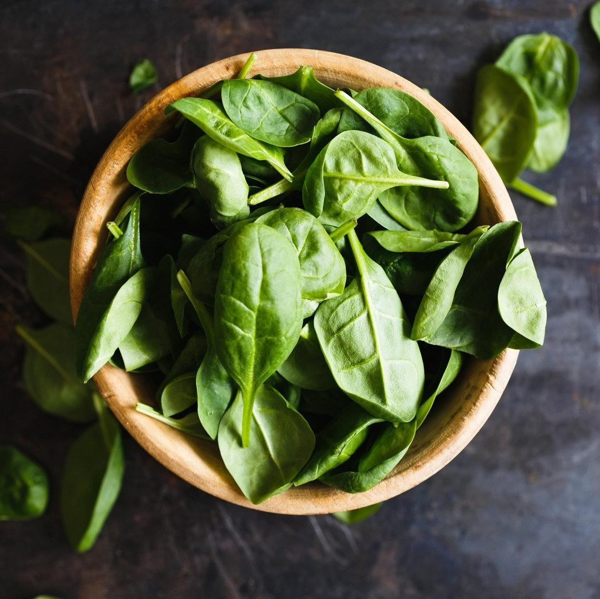

Developed with us
Блог

Соблюдая эти принципы мы приходим к балансу в питании достаточно быстро и легко, становимся здоровыми, энергичными и стройными!
Тенденция здорового образа жизни задает курс на правильное питание и полезные блюда, даже когда речь идет о быстрой еде.


Преподаватель нашей йога-студии рассказывает, как она стала фрукторианкой в семье мясоедов, и как не превратить еду в яблоко раздора.
Марина Басова выяснила, почему стоит включить шпинат в свой рацион, особенно в тёплое время года, когда хочется чего-то легкого, свежего и сочного.
Недосып, апатия, зябкость – частые спутники межсезонья. Мы выбрали 5 полезных напитков, которые помогут справиться с распространёнными осенними проблемами.
Семена льна - еще один суперфуд, который так любят приверженцы здорового питания.